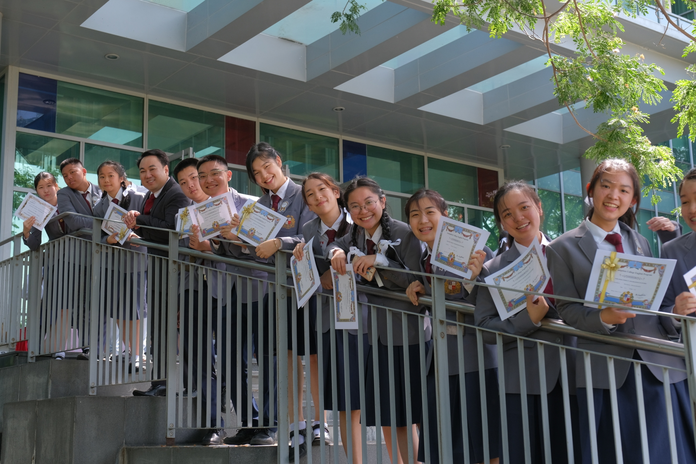

A strong English foundation and 21st-century skills from day one — empowering Thai children to thrive in a global world with solid academics and the moral discipline nurtured through Catholic values.
Building a strong English foundation and 21st-century skills from day one. Our goal: empower Thai children to thrive in a globalised world with solid academics and the moral discipline nurtured through Catholic values. Curriculum aligned with the Thai Basic Education Core Curriculum B.E. 2551 (Revise 2026).
Strong Foundations · Real Communication · Learning with Native Speakers · Future-Ready Skills
Develop well-rounded learners — physically, mentally, emotionally, and socially.
Learn through play, exploration, and hands-on experiences to build understanding and joy.
Cultivate life skills, character, resilience, and responsibility for life.
Foster kindness, empathy, and respect in a safe and caring environment.
According to the Core Curriculum of Basic Education B.E. 2551 (Revise 2026), aligned with international best practice.
| Learning Areas | Y1 | Y2 | Y3 | Y4 | Y5 | Y6 |
|---|---|---|---|---|---|---|
| 1. Fundamental Subjects | ||||||
| 1.1 Thai | 4 | 4 | 4 | 4 | 4 | 4 |
| 1.2 Mathematics | 4 | 4 | 4 | 4 | 4 | 4 |
| 1.3 Science and Technology | 2 | 2 | 2 | 2 | 2 | 2 |
| 1.4 Social Studies, Religion & Culture (Social Studies + History) | 2 | 2 | 2 | 2 | 2 | 2 |
| 1.5 Health and Physical Education | 2 | 2 | 2 | 2 | 2 | 2 |
| 1.6 Art | 1 | 1 | 1 | 1 | 1 | 1 |
| 1.7 Career | 1 | 1 | 1 | 1 | 1 | 1 |
| 1.8 Foreign Language — English | 4 | 4 | 4 | 4 | 4 | 4 |
| Total · Fundamental | 21 | 21 | 21 | 21 | 21 | 21 |
| 2. Additional Subjects · ACEP Distinctive | ||||||
| 2.1 Math (Cambridge) | 2 | 2 | 2 | 2 | 2 | 2 |
| 2.2 Science (Cambridge) | 2 | 2 | 2 | 2 | 2 | 2 |
| 2.3 English Literature (Upper Tier) | 0 | 0 | 2 | 2 | 2 | 2 |
| 2.4 Jolly Phonics | 2 | 2 | 0 | 0 | 0 | 0 |
| 2.5 Chinese Kids Connect | 2 | 2 | 2 | 2 | 2 | 2 |
| 2.6 STEM Education | 1 | 1 | 1 | 1 | 1 | 1 |
| 2.7 Montfort Study | 1 | 1 | 1 | 1 | 1 | 1 |
| Total · Additional | 10 | 10 | 10 | 10 | 10 | 10 |
| 3. Learners' Development Activities | ||||||
| 3.1 Guidance | 1 | 1 | 1 | 1 | 1 | 1 |
| 3.2.1 Boy Scouts | 1 | 1 | 1 | 1 | 1 | 1 |
| 3.2.2 Club | 1 | 1 | 1 | 1 | 1 | 1 |
| 3.3 Activities for social and public interests | 0.5 | 0.5 | 0.5 | 0.5 | 0.5 | 0.5 |
| Total · Activities | 3.5 | 3.5 | 3.5 | 3.5 | 3.5 | 3.5 |
| GRAND TOTAL | 34.5 | 34.5 | 34.5 | 34.5 | 34.5 | 34.5 |
ACEP Primary is delivered through the Smart English Program (S-EP). The Director is preparing an updated curriculum announcement — additional tracks will be added below once finalised.
Core subjects — English, Mathematics, and Science — taught entirely in English by native-speaking teachers. For students ready for an English-medium primary experience that mirrors international schools, alongside a strong Thai foundation in language, history, and culture.
The Director will announce the next track shortly. Space reserved here for the upcoming curriculum.

ACEP Primary graduates are prepared for secondary studies at sister schools in the Saint Gabriel's Foundation network — including Assumption College (AC), Assumption College Thonburi (ACT), and other AC schools across Thailand. Our alumni join a 125-year community of leading entrepreneurs, executives, and organisational leaders.